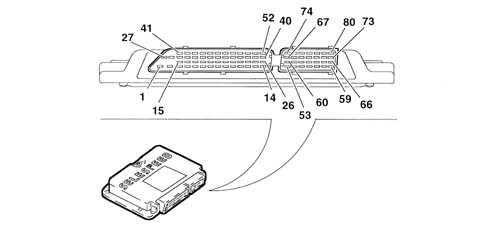
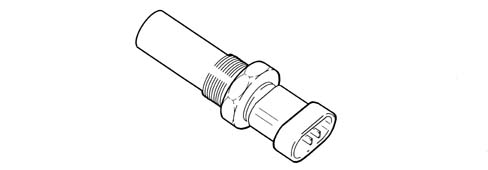
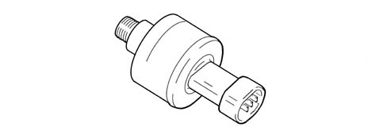
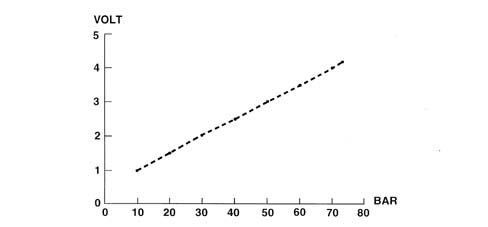
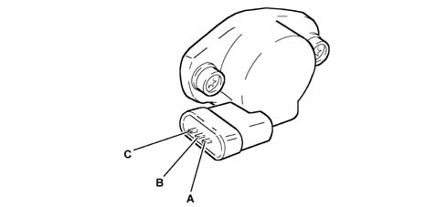
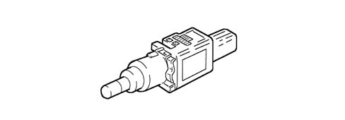

2127E ELECTRIC SPEED SELECTION SYSTEM
- Path
- Descriptions > 21 GEARBOX UNIT > 2127 HYDRAULIC TRANSMISSION EXTERNAL LINKAGE > 2127E ELECTRIC SPEED SELECTION SYSTEM
- Kind
- system description
- Applies to
- engines: 2.0 JTS; all production periods
- Interactive page
- https://sloeber94.github.io/elrnDB-aGt/en/#/125000337
Applies to: engines: 2.0 JTS; all production periods; only with equipment: Smart gearbox
COMPONENT DESCRIPTION
ELECTRONIC CONTROL UNIT
It is fitted in the passenger compartment under the dashboard on the passenger side.
The control unit communicates with the engine control unit through a CAN line and is fitted with a tester line.
PIN OUT

1. Earth
2. Earth
3. EV4 gear + selection actuator solenoid
4. Not connected
5. Not connected
6. Not connected
7. Not connected
8. Not connected
9. Not connected
10. Not connected
11. Not connected
12. Not connected
13. Not connected
14. Not connected
15. Not connected
16. Not connected
17. Not connected
18. Not connected
19. Not connected
20. Not connected
21. Not connected
22. Not connected
23. Not connected
24. Not connected
25. Not connected
26. Gear selection bit 0
27. Supply (+30)
28. Supply controlled by the ignition
29. Solenoid EV3 controlling selection actuator
30. Not connected
31. Pump relay control
32. Engagement actuator control solenoid EV1
33. CAN - line
34. Not connected
35. Not connected
36. Not connected
37. Not connected
38. Gear + input rpm sensor
39. Gear engagement position sensor
40. Pressure sensor
41. Not connected
42. Start-up relay control
43. Solenoid EV0 controlling clutch actuator +
44. Solenoid EV2 controlling gear engagement actuator +
45. CAN + line
46. Not connected
47. Not connected
48. Engine rpm
49. Diagnostic line K
50. Gear - input rpm sensor
51. Gear selection position sensor
52. Clutch position sensor
53. Not connected
54. Not connected
55. Not connected
56. Not connected
57. Not connected
58. Not connected
59. Not connected
60. Not connected
61. Not connected
62. Not connected
63. Not connected
64. Not connected
65. Not connected
66. Not connected
67. Speed selection bit 1
68. Speed selection bit 3
69. Brake pedal switch
70. Brake pedal switch
71. Brake pedal switch
72. Brake pedal switch
73. Gear engagement position sensor power source
74. Speed selection bit 2
75. Speed selection bit 4
76. Start-up signal
77. Auto switch
78. Door button
79. Clutch position sensor power source
80. Buzzer output control
GEARBOX INPUT SHAFT SPEED SENSOR
Electromagnetic, fitted to the gearbox bell housing.

OIL PRESSURE SENSOR
Active type and fitted to the hydraulic actuation unit.

DIAGRAM

ACTUATOR POSITION SENSORS
The sensors (potentiometers) that send the gearbox electronic control unit the position of the two actuators (speed selection and speed engagement) are fitted to the hydraulic actuation unit.

A. Earth
B. Supply
C. Signal
CLUTCH POSITION SENSOR
This is fitted on the clutch control actuator and informs the electric control unit of the position of the clutch control actuator.
BRAKE PEDAL SWITCH
This is fitted to the pedal unit and closed when the pedal is pressed to cause the STOP lights to come on and a signal to be sent to the gearbox electronic control unit

DOOR OPEN SWITCH
Detects when driver side door is open via an on-off switch that earths the circuit and informs the Selespeed control unit that this has occurred.
BUZZER
This is built into the control panel and notifies the driver of:
- a fault in the system;
- improper use (e.g. clutch overheating);
- car safety (e.g. ignition turned off with car in neutral).